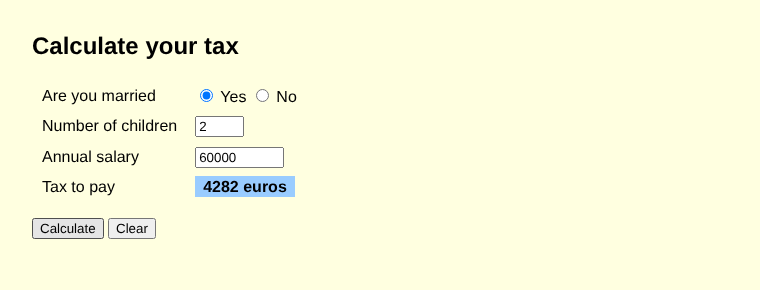

13. Webservices
13.1. Einführung
Im vorigen Kapitel haben wir mehrere TCP/IP-Client-Server-Anwendungen vorgestellt. Da Clients und Server Textzeilen austauschen, können sie in jeder beliebigen Sprache geschrieben werden. Der Client muss lediglich das vom Server erwartete Kommunikationsprotokoll kennen.
Webservices sind ebenfalls Serveranwendungen (TCP/IP). Sie haben die folgenden Merkmale:
- Sie werden von Webservern gehostet, und das Austauschprotokoll zwischen Client und Server ist HTTP (HyperText Transfer Protocol), ein auf TCP/IP aufbauendes Protokoll, das wir im vorigen Kapitel untersucht haben;
- Der Webservice hat unabhängig vom erbrachten Dienst ein standardisiertes Kommunikationsprotokoll. Ein Webservice bietet verschiedene Dienste an: S1, S2 …, Sn. Jeder dieser Dienste erwartet vom Client bereitgestellte Parameter und liefert dem Client ein Ergebnis. Für jeden Dienst muss der Client Folgendes wissen:
- wie der Dienst Si angegeben wird;
- die Liste der zu übergebenden Parameter und ihre Typen;
- den Typ des vom Dienst gelieferten Ergebnisses. Sind diese Elemente bekannt, verläuft der Dialog zwischen Client und Server im selben Format, unabhängig davon, welcher Webservice abgefragt wird. Dadurch wird die Kommunikation der Clients standardisiert;
- Zum Schutz vor Angriffen aus dem Internet öffnen viele Organisationen auf ihren Servern nur bestimmte Ports nach außen: vor allem die Ports 80 (HTTP) und 443 (HTTPS) für den Webservice. Alle anderen Ports sind gesperrt. Folglich sind Client-Server-Anwendungen wie die im vorigen Kapitel beschriebenen in der Regel auf das private Netzwerk (Intranet) der Organisation beschränkt. Das Hosten eines Dienstes auf einem Webserver macht ihn für die gesamte Internetgemeinschaft zugänglich;
- Der Webservice kann als entferntes Objekt betrachtet werden: Die von ihm angebotenen Dienste werden dann zu Methoden dieses Objekts. Ein Client kann dieses entfernte Objekt über ein Zwischenobjekt, einen sogenannten Proxy, der die gesamte Netzwerkkommunikation verbirgt, so verwenden, als wäre es lokal. So lässt sich ein Client bauen, der von dieser Schicht unabhängig ist: Ändert sich die Schicht, muss der Rest des Clients nicht angepasst werden;
- Wie bei den TCP/IP-Client-Server-Anwendungen aus dem vorigen Kapitel können Client und Server in jeder beliebigen Programmiersprache geschrieben sein. Sie tauschen Textzeilen aus, die aus zwei Teilen bestehen: den vom HTTP-Protokoll vorgeschriebenen Headern und dem Nachrichtenrumpf, dessen Format zwischen Client und Server vereinbart wird.
Die Architektur einer auf Webservices basierenden Client-Server-Anwendung sieht wie folgt aus:

Es handelt sich um eine Erweiterung der Schichtenarchitektur aus Kapitel 6, um spezialisierte Netzwerkkommunikationsschichten: den Webservice-Client auf der Clientseite und den Webservice selbst auf der Serverseite. Einer ähnlichen Architektur sind wir bereits beim TCP-Steuerberechnungsserver (Version 8) aus dem vorigen Kapitel begegnet.
13.1.1. Gestern: SOAP und WSDL
Im Jahr 2008 verwendete dieser Kurs die SOAP-Webservices des .NET Framework: [.asmx]-Dateien, die mit Visual Web Developer erstellt wurden und deren öffentliche Methoden mit dem Attribut [[WebMethod]] markiert waren. Der Client sendete eine HTTP-POST-Anforderung, deren Rumpf ein XML-Dokument im SOAP-Format (Simple Object Access Protocol) war: ein „Umschlag“ mit dem Methodennamen und seinen Parametern. Der Server antwortete mit einem weiteren XML-Umschlag, der das Ergebnis enthielt. Jeder Dienst wurde durch ein XML-Dokument im Format WSDL (Web Services Description Language) beschrieben, das unter der URL des Dienstes, gefolgt von [?WSDL], verfügbar war: Es listete die Methoden, ihre Parameter und ihre Typen auf. Anhand dieses Dokuments generierten Werkzeuge (der Assistent „Add Web Reference“ in Visual Studio, [wsimport] in Java) automatisch den Proxy des Dienstes. Diese Technologie und später ihr Nachfolger WCF (Windows Communication Foundation) waren in den 2000er-Jahren weit verbreitet. Heute gelten sie als veraltet: Weder ASMX noch die Serverkomponente von WCF existiert in .NET (Core) – es gibt lediglich einen Community-Port, CoreWCF, zur Migration von Altanwendungen. Die Gründe für diese Einstellung sind die Schwerfälligkeit von XML und der SOAP-Umschläge, die Komplexität der zugehörigen Standards (WS-Security, WS-Addressing usw.) und die Schwierigkeit, diese Dienste aus einem Browser aufzurufen.
13.1.2. Heute: REST und JSON
Die meisten heutigen Webservices folgen dem Architekturstil REST (REpresentational State Transfer) und tauschen JSON-Dokumente aus (JavaScript Object Notation, in Kapitel 5 vorgestellt). Der REST-Stil beruht auf den folgenden Prinzipien:
- Der Dienst stellt Ressourcen bereit, die jeweils durch eine URL bezeichnet werden: [/tax], [/clients/12], [/clients/12/orders];
- Auf diese Ressourcen wird mit den Methoden (auch Verben genannt) des HTTP-Protokolls zugegriffen, von denen jede eine bestimmte Bedeutung hat;
- Das Ergebnis der Aktion wird durch den HTTP-Statuscode in der Antwort angezeigt;
- Der Rumpf von Anforderungen und Antworten ist meistens ein JSON-Dokument, das kompakter und einfacher ist als XML;
- Der Dienst ist zustandslos: Jede Anforderung enthält alle für ihre Verarbeitung nötigen Informationen; der Server speichert für einen bestimmten Client keine Informationen von einer Anforderung zur nächsten.
Die am häufigsten verwendeten HTTP-Methoden sind die folgenden:
Methode | Verwendung | Beispiel |
GET | Eine Ressource lesen; etwaige Parameter stehen in der URL | GET /clients/12 |
POST | Eine Ressource erstellen oder eine Verarbeitung anfordern; die Daten stehen im Anforderungsrumpf | POST /clients |
PUT | Eine Ressource ersetzen | PUT /clients/12 |
PATCH | Einen Teil einer Ressource ändern | PATCH /clients/12 |
DELETE | Eine Ressource löschen | DELETE /clients/12 |
Die im vorigen Kapitel eingeführten Statuscodes entfalten hier ihre volle Bedeutung:
Code | Bedeutung |
200 OK | Die Anforderung war erfolgreich; der Antwortrumpf enthält das Ergebnis |
201 Created | Die Ressource wurde erstellt; der Header [Location] enthält ihre URL |
204 No Content | Die Anforderung war erfolgreich; die Antwort hat keinen Rumpf |
400 Bad Request | Die Anforderung ist ungültig (fehlender oder ungültiger Parameter usw.) |
404 Not Found | Die angeforderte Ressource existiert nicht |
500 Internal Server Error | Auf dem Server ist ein unerwarteter Fehler aufgetreten |
Ein REST-Dienst hat kein verbindlich vorgeschriebenes Gegenstück zu WSDL. Üblich ist es jedoch, ihn mit einem OpenAPI-Dokument (früher Swagger) im JSON- oder YAML-Format zu beschreiben, aus dem Werkzeuge Dokumentation, Testseiten und Clients generieren können. Wir kommen später darauf zurück.
Erwähnenswert ist schließlich gRPC, von Google entworfen: Die Methoden des Dienstes und ihre Nachrichten werden in einer [.proto]-Datei beschrieben, aus der Werkzeuge Server und Client generieren, ganz so wie zur Zeit von WSDL; die Nachrichten werden in einem kompakten Binärformat (Protocol Buffers) kodiert und über HTTP/2 übertragen. gRPC ist sehr effizient und für die Kommunikation zwischen Diensten innerhalb derselben Organisation beliebt, eignet sich aber schlecht für Browser. Es ist für .NET mit dem Paket [Grpc.AspNetCore] verfügbar, das wir nicht verwenden werden.
13.1.3. ASP.NET Core und die Minimal API
Zur Entwicklung unserer Webservices verwenden wir ASP.NET Core, das Framework von .NET für die Webentwicklung, und genauer dessen Minimal API (.NET 6, 2021): In diesem Framework werden eine URL und eine HTTP-Methode direkt einer C#-Funktion zugeordnet, meist einem Lambda. Der Webserver ist Kestrel, ein in C# geschriebener und in die Anwendung integrierter HTTP-Server: Es ist nicht nötig, einen separaten Webserver zu installieren, wie es 2008 mit IIS (Internet Information Services) der Fall war. ASP.NET Core ist Teil des gemeinsam genutzten Frameworks [Microsoft.AspNetCore.App], das mit dem .NET SDK installiert wird: Es erfordert keine NuGet-Pakete.
Visual Web Developer, das kostenlose Microsoft-Werkzeug, mit dem 2008 Webservices geschrieben wurden, existiert nicht mehr: Die Befehle [dotnet] genügen, und jeder Code-Editor ist geeignet (Visual Studio Code, Visual Studio, Rider).
13.2. Ein erster Webservice
Wir werden eine einfache Client-Server-Anwendung mit der folgenden vereinfachten Architektur erstellen:

Die Projekte dieses Kapitels sind in einer Projektmappe namens [13-web-services.slnx] zusammengefasst, die mit den folgenden Befehlen erstellt wurde, eingegeben im [13-web-services]-Ordner:
Die Projekte sind bereits in den Kursmaterialien enthalten: Der Ordner [13-web-services] in der ZIP-Datei enthält die Projektmappe und die sechs Projekte, vollständig und wie in diesem Kapitel beschrieben angepasst. Der Leser muss die obigen Befehle daher nicht eingeben (sie würden ohnehin fehlschlagen, da die Ordner bereits existieren): Sie zeigen, wie diese Projekte erstellt wurden und wie Sie eigene erstellen. Um ein mitgeliefertes Projekt auszuführen, wechseln Sie einfach in seinen Ordner und geben Sie [dotnet run] ein (oder öffnen Sie [13-web-services.slnx] in Visual Studio oder VS Code). Dasselbe gilt später für die Befehle [dotnet add ... reference] und [dotnet add ... package]: Die Verweise und Pakete sind bereits in den mitgelieferten [.csproj]-Dateien enthalten.
Die Vorlage [web] von [dotnet new] erstellt ein leeres ASP.NET-Core-Anwendungsprojekt. Die drei Webservices dieses Kapitels ([WsHello], [WsOperations], [WsTax]) werden mit dieser Vorlage erstellt, ihre Clients mit der Standardvorlage [console]. Daraus ergibt sich die folgende Verzeichnisstruktur (nur die wichtigsten Dateien sind aufgeführt):
13.2.1. Die Serverseite

Die von [dotnet new web] generierte Projektdatei [WsHello.csproj] sieht wie folgt aus:
Anmerkungen:
- Zeile 1: Der einzige Unterschied zu einem Konsolenprojekt ist das verwendete SDK – [Microsoft.NET.Sdk.Web] statt [Microsoft.NET.Sdk]. Das Web-SDK verweist auf das gemeinsam genutzte Framework ASP.NET Core und fügt die Namespaces von ASP.NET Core zu den impliziten [using]-Namespaces hinzu ([Microsoft.AspNetCore.Builder], [Microsoft.AspNetCore.Http], [Microsoft.Extensions.DependencyInjection], [Microsoft.Extensions.Logging] …);
- Es gibt keine Zeile für [OutputType]: Eine Webanwendung ist immer eine ausführbare Datei.
Das generierte Programm [Program.cs] besteht nur aus vier Anweisungen:
- Zeile 1: [WebApplication.CreateBuilder] bereitet den Build der Webanwendung vor: Es liest die Konfiguration ([appsettings.json]-Dateien, Umgebungsvariablen, Befehlszeilenargumente), richtet die Protokollierung ein und konfiguriert den Dependency-Injection-Container, den wir in Kapitel 6 verwendet haben. [builder] ermöglicht es, diese Vorbereitung zu vervollständigen, zum Beispiel durch die Registrierung von Services im Container;
- Zeile 2: Die Anwendung wird gebaut;
- Zeile 4: Die HTTP-Methode [GET] und die URL [/] (die Wurzel der Website) werden einem Lambda zugeordnet. Wenn der Server die Anforderung [GET /] erhält, führt er das Lambda aus und sendet das Ergebnis – in diesem Fall den Text [Hello World!] – an den Client;
- Zeile 6: Der Kestrel-Server wird gestartet; er wartet auf Anforderungen, bis die Anwendung beendet wird (Strg+C).
Die Vorlage erstellt außerdem drei Konfigurationsdateien:
- [appsettings.json]: die Konfiguration der Anwendung;
- [appsettings.Development.json]: Werte, die die aus [appsettings.json] überschreiben, wenn die Anwendung in der Umgebung „Development“ läuft;
- [Properties/launchSettings.json]: „Startprofile“, die von [dotnet run] und von Visual Studio verwendet werden. Sie legen den Listening-Port fest, der von [dotnet new] zufällig gewählt wird (zum Beispiel 5273), sowie die Umgebungsvariable [ASPNETCORE_ENVIRONMENT=Development].
Die Laufzeitumgebung (Development, Staging, Production) verändert das Verhalten der Anwendung. Insbesondere erzeugt in der Umgebung Development eine unbehandelte Ausnahme eine Antwort mit allen Details der Ausnahme, einschließlich des Aufrufstapels: Das ist für den Entwickler nützlich, wäre aber in der Produktion eine Sicherheitslücke. Damit unsere Ergebnisse dem entsprechen, was ein Benutzer sehen würde, haben wir [launchSettings.json] und [appsettings.Development.json] entfernt (sie fehlen daher in den mitgelieferten Projekten): Unsere Services laufen in der Standardumgebung Production. Der Listening-Port wird dann in [appsettings.json] festgelegt:
- Zeilen 2–5: Protokollierung: Meldungen der Stufe [Information] und höher werden angezeigt, mit Ausnahme der von ASP.NET Core selbst stammenden (Kategorie [Microsoft.AspNetCore.*]), die auf Warnungen ([Warning]) und Fehler beschränkt sind;
- Zeile 8: die Rechnernamen, die in den HTTP- und [Host]-Headern von Anforderungen akzeptiert werden; [*] akzeptiert alle;
- Zeile 9: Diese Zeile haben wir hinzugefügt: Der Server lauscht auf Port 5100 des Rechners [localhost]. Die Adresse könnte auch als Argument übergeben werden: [dotnet run --urls http://localhost:5100], oder über die Umgebungsvariable [ASPNETCORE_URLS].
Der Webservice [WsHello] ist die Fortsetzung des Dienstes von 2008, dessen einzige Methode [SayHelloToTheLady] die Zeichenkette [Hello Mrs xx] zurückgab. Sein Code, [Program.cs], sieht wie folgt aus:
Anmerkungen:
- Zeile 6: Die Stammseite der Website zeigt einen Text an, der die Verwendung des Dienstes erklärt;
- Zeile 11: Die URL-Vorlage (die sogenannte Route) [/hello/{name}] enthält einen Routenparameter [{name}]: Er entspricht jedem URL-Segment, das nach [/hello/] steht. So weist die URL [/hello/Carla%20Bruni] dem Parameter [{name}] den Wert [Carla Bruni] zu (der Code [%20] steht in einer URL für ein Leerzeichen). ASP.NET Core übergibt diesen Wert automatisch an den gleichnamigen Parameter des Lambdas: Das ist das Parameter-Binding. Die Webmethode von 2008 ist zu einer URL geworden. Das Lambda liefert eine Zeichenkette: Diese wird unverändert als Textdokument (Typ [text/plain]) an den Client gesendet;
- Zeile 14: dasselbe, aber das Lambda liefert ein Objekt vom Typ [Greeting]. ASP.NET Core serialisiert es mit [System.Text.Json] (Kapitel 5) zu JSON und sendet es als Dokument vom Typ [application/json] an den Client. Das ist das Standardformat für die Antwort eines REST-Webservices;
- Zeile 17: Der Server wartet auf Anforderungen;
- Zeile 20: der Ergebnistyp, ein [record] (Kapitel 4). In einer höheren Programmiersprache stehen die Typdeklarationen nach den Anweisungen.
Der Dienst wird mit dem Befehl [dotnet run] gestartet, der im Projektordner eingegeben wird. Er zeigt sein Protokoll an:
- Zeile 3: Der Server lauscht auf Port 5100;
- Zeile 5: Die Anwendung ist bereit. Sie kann mit Strg+C beendet werden;
- Zeile 7: Die Laufzeitumgebung ist Production;
- Zeile 9: der Stammordner der Inhalte der Anwendung, in dem [appsettings.json] und der Ordner [wwwroot] mit statischen Dateien gesucht werden. Mit [dotnet run] ist dies der Projektordner (der Anfang des Pfades wurde im Kurs durch [...] ersetzt);
- Zeile 11: Diese Meldung erschien, als der Server nach den in den folgenden Absätzen beschriebenen Tests mit Strg+C beendet wurde.
Jede Protokollmeldung gibt ihre Stufe an ([info], [warn], [fail], [crit] …) sowie ihre Kategorie – hier [Microsoft.Hosting.Lifetime] –, gefolgt von einer Ereignisnummer in eckigen Klammern.
13.2.2. Den Dienst mit curl abfragen
Während der Dienst läuft, fragen wir ihn in einem zweiten Befehlsfenster mit dem im vorigen Kapitel vorgestellten Werkzeug [curl] ab. Die Option [-i] zeigt die Antwort-Header vor dem Rumpf an, und die Option [-s] (silent) unterdrückt die Fortschrittsanzeige:
- Zeile 2: Die Anforderung war erfolgreich;
- Zeile 3: Das Dokument ist Text (UTF-8);
- Zeile 6: Das Dokument wird in Blöcken gesendet, denen jeweils ihre Größe vorangestellt ist: Kestrel musste die Gesamtgröße des Dokuments nicht berechnen, bevor es mit dem Senden begann;
- Zeile 8: das Ergebnis der Webmethode.
Im Jahr 2008 antwortete der ASMX-Dienst mit einem XML-Dokument: [<string xmlns="http://st.istia.univ-angers.fr">Hello Mrs Carla Bruni</string>]. Fordern wir nun die JSON-Version an:
- Zeile 3: Das Dokument hat jetzt den Typ [application/json];
- Zeile 8: das serialisierte Objekt [Greeting]. Beachten Sie, dass die Namen der C#-Eigenschaften [Name] und [Message] zu [name] und [message] geworden sind: ASP.NET Core verwendet die JSON-Optionen „Web“ von [System.Text.Json] ([JsonSerializerDefaults.Web], Kapitel 5), die die Namen in „camelCase“ schreiben, wie es in JavaScript üblich ist.
Eine URL, die zu keiner Route passt, liefert eine 404-Antwort:
Sie können die URL [http://localhost:5100/hello/Carla Bruni] auch in die Adressleiste eines Browsers eingeben, der den empfangenen Text anzeigt: Ein per GET abgefragter Webservice lässt sich sehr einfach testen. Im Jahr 2008 generierte der ASMX-Server für jede Methode eine (HTML-)Testseite.
13.2.3. Ein Konsolenclient

Es ist möglich, den Client des Dienstes mit einem einfachen TCP-Client zu implementieren, wie im vorigen Kapitel gezeigt: Man sendet einfach die HTTP-Anforderung und liest die Antwort. Wir verwenden jedoch die – ebenfalls im vorigen Kapitel eingeführte – Klasse [HttpClient], die uns die Behandlung des HTTP-Protokolls abnimmt. Das Projekt [ClientWsHello] ist ein normales Konsolenprojekt. Sein Programm sieht wie folgt aus:
Anmerkungen:
- Zeile 1: der Namespace für die Erweiterungsmethoden von [HttpClient], die JSON austauschen;
- Zeile 5: Die URL des Dienstes wird als Argument übergeben oder hat andernfalls den Standardwert [http://localhost:5100/]. Das entspricht der Datei [app.config] von 2008, die die Adresse des Dienstes enthielt: Ändert sich diese, muss der Client nicht neu kompiliert werden;
- Zeile 8: ein einziger [HttpClient] für das gesamte Programm. Seine Eigenschaft [BaseAddress] ist die Basis-URL, zu der die URL-Werte der Anforderungen hinzugefügt werden. Beachten Sie: Die Basis-URL muss mit [/] enden, damit [hello/...] an sie angehängt werden kann;
- Zeile 22: Der eingegebene Name wird zu einem URL-Segment. [Uri.EscapeDataString] kodiert Zeichen, die darin nicht erlaubt sind: Ein Leerzeichen wird zu [%20], das Zeichen „é“ zu [%C3%A9] …;
- Zeile 24: eine GET-Anforderung, deren Antwort als Zeichenkette gelesen wird;
- Zeile 27: eine GET-Anforderung, deren JSON-Antwort in ein Objekt vom Typ [Greeting] deserialisiert wird. Der Client hat keinen Zugriff auf den Typ [Greeting] des Servers: Er deklariert seinen eigenen (Zeile 38) mit denselben Eigenschaftsnamen. Auch die Deserialisierung verwendet die Optionen „Web“, die die Groß-/Kleinschreibung von Namen ignorieren: [name] wird der Eigenschaft [Name] zugewiesen;
- Zeile 30: Beide Methoden lösen eine [HttpRequestException] aus , wenn der Dienst nicht erreichbar ist oder mit einem Fehlercode (4xx, 5xx) antwortet.
Ergebnisse bei laufendem Dienst:
Zeile 4 zeigt das empfangene Objekt [Greeting] im Format der Methode [ToString], die für den [record] generiert wurde. Wird eine Adresse angegeben, unter der kein Dienst lauscht, wird die Verbindung abgelehnt:
Im Jahr 2008 verwendete der Client einen Proxy der Klasse [ServiceSoapClient], der von Visual Studio aus der WSDL des Dienstes generiert wurde, und rief die entfernte Methode wie eine lokale Methode auf: [new ServiceSoapClient().SayHelloToTheLady("Carla Bruni")]. Hier rufen wir die URL des Dienstes direkt auf. Für den Steuerberechnungsdienst werden wir einen echten Proxy schreiben.
13.2.4. Die Dienstbeschreibung: OpenAPI
Das WSDL-Dokument von 2008 beschrieb den Dienst in einem standardisierten Format. Sein heutiges Gegenstück ist das OpenAPI-Dokument. Seit Version 9 von .NET kann ASP.NET Core es mit dem Paket [Microsoft.AspNetCore.OpenApi] aus den deklarierten Routen generieren:
Das Dokument [/openapi/v1.json] beschreibt dann jede Route: ihre URL, ihre HTTP-Methode, ihre Parameter und deren Typen sowie das JSON-Schema ihrer Antworten. Werkzeuge wie Swagger UI oder Scalar generieren daraus eine Test-Webseite, und Generatoren wie Kiota oder NSwag erzeugen einen typisierten Client in verschiedenen Sprachen, so wie es der Assistent „Add Web Reference“ mit der WSDL tat. Da das Paket [Microsoft.AspNetCore.OpenApi] auf unserem Testrechner (der keinen Internetzugang hat) nicht verfügbar ist, können wir das generierte Dokument nicht zeigen.
13.3. Ein Webservice für arithmetische Operationen
Der vorherige Dienst bot nur eine einzige Methode. Wir betrachten nun, wie schon 2008, einen Webservice, der die vier Grundrechenarten anbietet: add(a, b), subtract(a, b), multiply(a, b) und divide(a, b). Wir nutzen die Gelegenheit, um die beiden Möglichkeiten der Parameterübergabe an einen Webservice und die Meldung von Fehlern zu untersuchen.
13.3.1. Die Serverseite
Der Dienst [WsOperations] akzeptiert zwei Arten von Anforderungen:
Anforderung | Parameter |
GET /add?a=1.5&b=2 | Die Operation im URL-Pfad, die Zahlen in der Query-Zeichenfolge |
POST /calculation | ein JSON-Dokument im Anforderungsrumpf: [{"operation":"add","a":1.5,"b":2}] |
In beiden Fällen ist die Antwort ein JSON-Dokument: [{"operation":"add","a":1.5,"b":2,"result":3.5}]. GET eignet sich für einfache Anforderungen, die nichts auf dem Server verändern: Die URL kann in einen Browser eingegeben und als Lesezeichen gespeichert werden, und ihre Antwort kann zwischengespeichert werden. POST eignet sich für umfangreiche oder strukturierte Daten. Die Datei [appsettings.json] des Dienstes ist bis auf den Port (5110) identisch mit der von [WsHello]. Sein Programm sieht wie folgt aus:
Anmerkungen:
- Zeile 6: Der Service, der Fehlerantworten im Format Problem Details erzeugt, wird registriert. Dieses durch RFC 9457 standardisierte Format ist ein JSON-Dokument vom Typ [application/problem+json] , das einen Fehler beschreibt: seinen Typ, einen Titel, den Statuscode, ein Detail und gegebenenfalls zusätzliche Informationen. Das ist die Standardmethode, mit der ein REST-Dienst angibt, was nicht stimmt;
- Zeile 9: Wir installieren eine Middleware – das heißt ein Glied der Verarbeitungskette, die jede Anforderung durchläuft. Diese Middleware fügt Fehlerantworten, die keinen Rumpf haben, einen „Problem Details“-Rumpf hinzu, etwa den 404-Antworten, die ASP.NET Core für Anforderungen unbekannter URLs erzeugt;
- Zeilen 13–14: die GET-Anforderung. Der Parameter [operation] im Lambda ist an den Routenparameter [{operation}] gebunden. Die Parameter [a] und [b], die nicht in der Route vorkommen, werden an die gleichnamigen Parameter der Query-Zeichenfolge gebunden ([?a=1.5&b=2]). Sie sind als Typ [string?] deklariert: Ein fehlender Parameter wird als [null] behandelt. Wir hätten sie auch als Typ [double] deklarieren können: ASP.NET Core hätte dann die Konvertierung selbst durchgeführt und einen fehlenden oder fehlerhaften Wert ohne Erklärung mit einer 400-Antwort abgewiesen. Indem wir sie als Zeichenketten entgegennehmen, behalten wir die Kontrolle über die Fehlermeldungen;
- Zeilen 18–19: die POST-Anforderung. Der Parameter [request] hat einen komplexen Typ ([CalculationRequest], Zeile 72): ASP.NET Core deserialisiert ihn aus dem JSON-Rumpf der Anforderung. Seine Eigenschaften sind nullable: Eine im JSON-Dokument fehlende Eigenschaft wird auf [null] gesetzt;
- Zeilen 25–26: die Konvertierung einer Zeichenkette in eine Zahl; schlägt sie fehl, ist das Ergebnis [null]. Sowohl in der URL als auch in JSON werden Zahlen mit Dezimalpunkt geschrieben: Die Konvertierung erfolgt mit der invarianten Kultur (Kapitel 5), nicht mit der Kultur des Servers, die ein Komma erwarten könnte (zum Beispiel die französische Kultur). Die lokalen Funktionen [ReadNumber] und [Calculate] werden nach [app.Run] deklariert; sie sind statisch ([static]), weil sie keine Variablen des Hauptprogramms verwenden;
- Zeilen 33–39: Die angeforderte Operation wird durch einen Delegaten (Kapitel 7) dargestellt, der von einem [switch]-Ausdruck ausgewählt wird: ein Lambda pro Operation; [null] für eine unbekannte Operation;
- Zeilen 42–53: Die drei Parameter werden überprüft, indem Fehler in einem Dictionary gesammelt werden, das jedem Parameter die Liste seiner Fehlermeldungen zuordnet;
- Zeile 55: Wurde ein Fehler gefunden, wird eine 400-Antwort zurückgegeben. Der Musterfilter [a is not double x] ist wahr, wenn [a] gleich [null] ist; andernfalls weist er den Wert von [a] der Variablen [x] zu. Der Compiler weiß, dass nach diesem [if] [calculation], [x] und [y] Werte haben: Er gibt keine Warnungen aus;
- Zeile 58: Die statische Klasse [Results] liefert die üblichen Antworten. [ValidationProblem] liefert eine 400-Antwort im Format „Problem Details“, die die Validierungsfehler enthält (Eigenschaft [errors]);
- Zeilen 62–65: Eine Division durch null wird mit einer 400-Antwort im Format „Problem Details“ abgewiesen, die von [Results.Problem] erzeugt wird. Diese Abweisung ist notwendig: In C# löst die Division eines [double] durch null keine Ausnahme aus, sondern liefert unendlich ([double.PositiveInfinity]), was ein JSON-Dokument nicht darstellen kann. Der Dienst von 2008, der diese Prüfung nicht durchführte, hätte unendlich zurückgegeben, was die XML-Serialisierung von .NET als [INF] schreibt;
- Zeile 68: die 200-Antwort, deren Rumpf das nach JSON serialisierte Objekt [CalculationResult] ist;
- Zeilen 72–74: die beiden Typen, die mit Clients ausgetauscht werden. Diese Objekte, die ausschließlich dem Transport von Daten zwischen zwei Anwendungen dienen, heißen DTO (Data Transfer Object). [record]-Objekte sind für diesen Zweck ideal.
Die Methode [Calculate] liefert ein Objekt vom Typ [IResult]: Das ist die Schnittstelle der von [Results] erzeugten Objekte. Jedes von ihnen schreibt die entsprechende HTTP-Antwort (Statuscode, Header, Rumpf).
13.3.2. Test mit curl
Der Dienst wird mit [dotnet run] im Ordner [WsOperations] gestartet. Eine Addition:
Division durch null:
- Zeile 2: Die Anforderung wird abgewiesen;
- Zeile 3: Der Rumpf ist ein „Problem Details“-Dokument;
- Zeile 8: Das Dokument enthält die Eigenschaften [type] (eine URL, die den Fehlertyp dokumentiert, hier der Abschnitt von RFC 9110, der den Code 400 definiert), [title], [status] und [detail], die durch unseren Aufruf von [Results.Problem] gesetzt wurden, sowie [traceId], eine eindeutige Kennung der Anforderung, mit der sie sich in den Server-Protokollen wiederfinden lässt.
Eine unbekannte Operation, eine mit Dezimalkomma geschriebene Zahl und eine fehlende Zahl:
Die Eigenschaft [errors] des Dokuments enthält die Validierungsfehler, Parameter für Parameter. Nun eine POST-Anforderung. Die Option [-d] von [curl] sendet den darauf folgenden Text im Rumpf einer POST-Anforderung, und die Option [-H] fügt der Anforderung einen Header hinzu, hier den Typ des gesendeten Dokuments:
Ist das gesendete JSON-Dokument fehlerhaft, kann ASP.NET Core den Parameter [request] nicht konstruieren: Es antwortet von selbst mit einem 400-Fehler, ohne unser Lambda auszuführen:
Das „Problem Details“-Dokument in Zeile 8 wurde von der Middleware [UseStatusCodePages] erzeugt. In der Umgebung Development würde es die vollständige Beschreibung des Deserialisierungsfehlers enthalten.
13.3.3. Die Clientseite
Der grafische Client von 2008 bot eine Liste von Operationen, zwei Eingabefelder und eine Schaltfläche. Unser Konsolenclient fragt den Benutzer in einer einzigen Zeile nach der Operation und den beiden Zahlen und fragt dann den Dienst zweimal ab: zuerst mit GET, dann mit POST, um beide Methoden zu demonstrieren. Hier das Programm:
Anmerkungen:
- Zeilen 25–32: Die Zahlen werden lokal validiert, bevor ein Dienst aufgerufen wird, so wie es der grafische Client von 2008 tat. Sie werden mit Dezimalpunkt eingegeben (Kultur en-US);
- Zeilen 40–41: die URL der GET-Anforderung. Zahlen müssen darin mit einem Punkt geschrieben werden: Da die Interpolation [$"..."] die aktuelle Locale verwendet, wird die Zeichenkette mit [string.Create] konstruiert, das die zu verwendende Locale erhält – hier die invariante Locale;
- Zeile 45: die GET-Anforderung und die Deserialisierung ihrer JSON-Antwort in ein [CalculationResult]-Objekt. Ist der Statuscode der Antwort kein Erfolgscode (2xx), löst [GetFromJsonAsync] eine [HttpRequestException] aus: Der Antwortrumpf, der den Fehler erklärt, geht dann verloren;
- Zeile 51: Die Eigenschaft [StatusCode] der Ausnahme enthält den Statuscode der Antwort oder [null] , wenn der Dienst nicht geantwortet hat (Dienst nicht erreichbar);
- Zeile 57: die POST-Anforderung: Das Objekt [CalculationRequest] wird im Anforderungsrumpf als JSON serialisiert. [PostAsJsonAsync] löst bei einem Fehlercode keine Ausnahme aus: Es liefert die Antwort ([HttpResponseMessage]), die wir untersuchen;
- Zeile 58: [true] bei einem 2xx-Code;
- Zeile 61: Bei Erfolg wird der Rumpf in ein [CalculationResult]-Objekt deserialisiert;
- Zeilen 67–75: Schlägt die Anforderung fehl, ist der Rumpf ein „Problem Details“-Dokument, das in ein [Problem]-Objekt deserialisiert wird (Zeile 90), aus dem der Titel, die Details und die Validierungsfehler angezeigt werden. Die [foreach]-Schleife zerlegt jedes Element des Dictionarys [Errors] in ein Tupel (Kapitel 5); [?? []] ersetzt ein fehlendes Dictionary durch eine leere Auflistung;
- Zeilen 87–90: die DTO-Dateien des Clients. Sie werden hier erneut deklariert: Ein Client teilt nicht den Code des Servers, sondern nur das Format der ausgetauschten JSON-Dokumente. ASP.NET Core stellt zwar eine Klasse [ProblemDetails] bereit, sie gehört aber zum Webframework; für den Client genügt ein einfacher [record].
Ergebnisse bei laufendem Dienst:
- Zeile 3: die URL der GET-Anforderung: Die eingegebene Zahl 1.5 wird als 1.5 geschrieben;
- Zeilen 6–8: In beiden Anforderungen wird derselbe Fehler beobachtet: [GetFromJsonAsync] erkennt nur den Code 400, während das Lesen der POST-Antwort die vom Dienst gelieferte Erklärung offenbart;
- Zeilen 11–12: Die unbekannte Operation wurde vom Dienst erkannt;
- Zeile 14: Die fehlerhafte Zahl wurde vom Client erkannt, der den Dienst nicht abgefragt hat.
13.4. Beispielanwendung – Version 9: Ein Webservice zur Steuerberechnung
Wir kehren zur Anwendung zur Steuerberechnung zurück. Im vorigen Kapitel (Version 8) hatten wir einen TCP-Server erstellt, der mit einem eigenen Kommunikationsprotokoll aus der Ferne abgefragt werden konnte. Wir machen daraus nun einen REST-Webservice.
13.4.1. Die Architektur
Die Architektur von Version 9 sieht wie folgt aus:

- Auf der Serverseite empfängt der Webservice [WsTax] HTTP-Anforderungen und lässt sie von den Schichten [business] und [dao] aus Version 5 (Kapitel 6) verarbeiten, die unverändert wiederverwendet werden;
- Auf der Clientseite wird die Schicht [ui] aus Version 5 ebenfalls unverändert wiederverwendet. Sie kommuniziert mit einer neuen Art von Schicht [business], [TaxBusinessHttp], die die Schnittstelle [ITaxBusiness] implementiert, indem sie den Webservice abfragt: Sie fungiert als Proxy für den Dienst. Die Schicht [ui] weiß nicht, dass die Berechnung auf einem anderen Rechner erfolgt;
- Auf beiden Seiten übernimmt der Dependency-Injection-Container die Integration der Schichten; er ersetzt Spring.NET, das 2008 verwendet wurde.
13.4.2. Der Webservice
Der Dienstvertrag sieht wie folgt aus:
Anforderung | Antwort bei Erfolg | Antwort im Fehlerfall |
GET /tax?married=y&children=2&salary=60000 | 200: [{"tax":4282}] | 400: „Problem Details“-Dokument |
POST /tax mit dem Rumpf [{"married":true,"children":2,"salary":60000}] | 200: [{"tax":4282}] | 400: „Problem Details“-Dokument |
Das Projekt [WsTax] verweist auf die Projekte der Schichten [dao] und [business] aus Version 5:
- Zeilen 11–12: die beiden Projektverweise. Sie werden mit dem Befehl [dotnet add WsTax reference ../06-architectures/TaxV5/Tax.Dao ../06-architectures/TaxV5/Tax.Business] hinzugefügt, der im Ordner [13-web-services] eingegeben wird (beim mitgelieferten Projekt nicht nötig, da sie dort bereits vorhanden sind). Die Datendateien [TaxData.txt] und [TaxData.json] des Projekts [Tax.Dao] werden neben die ausführbare Datei des Dienstes kopiert (Kapitel 6).
Im Jahr 2008 mussten die DLL-Dateien der Schichten in einen Ordner [lib] der Website kopiert und zu den Verweisen des Projekts hinzugefügt werden. Die Konfigurationsdatei [appsettings.json] sieht wie folgt aus:
- Zeile 9: Der Dienst lauscht auf Port 5120;
- Zeilen 10–12: die Konfiguration der Schicht [dao], im selben Format wie in der Datei [appsettings.json] aus Version 5: die zu verwendende Implementierung und ihre Datendatei. Hier verwenden wir die JSON-Datei.
Das Programm des Dienstes sieht wie folgt aus:
Anmerkungen:
- Zeilen 10–11: Die Konfiguration der Schicht [dao] wird aus [builder.Configuration] gelesen. Dieses Objekt vereint alle Konfigurationsquellen: die Datei [appsettings.json], Umgebungsvariablen und Befehlszeilenargumente. In Kapitel 6 mussten wir selbst einen [ConfigurationBuilder] erstellen; ASP.NET Core nimmt uns das ab;
- Zeilen 12–20: die Registrierung der Schichten [dao] und [business] im Dependency-Injection-Container von ASP.NET Core, [builder.Services]. Diese Zeilen stammen aus dem Hauptprogramm von Version 5: Der Container ist derselbe ([IServiceCollection]); der einzige Unterschied ist, woher man ihn erhält. Im Jahr 2008 übernahm diese Integration Spring.NET, konfiguriert in der Datei [web.config];
- Zeilen 28–35: Beide Schichten sind Singletons, die der Container bei der ersten Anforderung erstellt. Wir lösen diese Erstellung gleich beim Start aus, vor der Verarbeitung von Anforderungen: Fehlt die Datendatei oder ist sie fehlerhaft, hält der Dienst sofort mit einer klaren Meldung an, anstatt auf alle Anforderungen mit einem 500-Fehler zu antworten. Das war 2008 die Aufgabe der Methode [Application_Start] in der Datei [Global.asax]. [app.Logger] ist das Anwendungsprotokoll; [LogCritical] schreibt eine Meldung der Stufe „critical“ hinein. Der Meldungstext ist eine Vorlage: [{Message}] und [{Cause}] werden der Reihe nach durch die folgenden Argumente ersetzt. Anders als bei einer Zeichenketteninterpolation ermöglicht die Vorlage es Protokollierungswerkzeugen, jeden Wert gesondert zu erfassen;
- Zeile 39: eine Middleware-Komponente, die eine unbehandelte Ausnahme in eine 500-Antwort im Format „Problem Details“ umwandelt, ohne die Details preiszugeben;
- Zeilen 43–44: zwei Middleware-Komponenten für den Webclient, der im folgenden Absatz beschrieben wird. [UseStaticFiles] liefert die Dateien aus dem Ordner [wwwroot] des Projekts aus (HTML-Seiten, Bilder, Skripte usw.); [UseDefaultFiles] liefert für die URL [/] das Dokument [index.html] aus. Das sind dieselben Zeilen wie bei jeder Website: Ein einziger Server kann sowohl eine Website als auch einen Webservice hosten;
- Zeilen 47–52: die GET-Anforderung. Der Parameter [business] des Lambdas steht weder in der Route noch in der Query-Zeichenfolge: ASP.NET Core findet ihn im Dependency-Injection-Container, der die Schicht [business] bereitstellt. Die anderen drei Parameter sind Zeichenketten, die vom Lambda konvertiert werden: [y]/[n] für [married], ganze Zahlen für [children] und [salary], und [null] im Fehlerfall;
- Zeilen 55–56: die POST-Anforderung: Der JSON-Rumpf wird in ein [TaxRequest]-Objekt deserialisiert (Zeile 92), dessen nullable Eigenschaften es erlauben, fehlende Werte zu erkennen. Dieselbe URL [/tax] wird je nach HTTP-Methode der Anforderung zwei Lambdas zugeordnet;
- Zeile 59: [app.Run] gibt die Kontrolle erst zurück, wenn der Server heruntergefahren wird. Da das Programm eine Anweisung [return 1] enthält, muss es auch bei normaler Beendigung einen Code zurückgeben;
- Zeile 63: die lokale Funktion, die beide Anforderungen verarbeitet. Sie ist nicht statisch, weil sie die Variable [app] des Hauptprogramms für die Protokollierung verwendet. Ihr Rückgabetyp [Results<Ok<TaxResponse>, ValidationProblem>] listet die möglichen Antworten auf: eine 200-Antwort, die ein Objekt [TaxResponse] enthält, oder eine 400-Validierungsantwort. Diese Typen sind im Namespace [Microsoft.AspNetCore.Http.HttpResults] definiert (Zeile 4), und ihre Objekte werden von der Klasse [TypedResults] erstellt (Zeilen 71 und 88): Das ist die typisierte Version der Klasse [Results], die von [WsOperations] verwendet wird. Wir kommen in den ergänzenden Hinweisen darauf zurück;
- Zeile 66: ein musterbasierter Filter, der die drei Parameter prüft und sie, wenn sie korrekt sind, den Variablen [isMarried], [nbChildren] und [amount] zuweist. [children is int nbChildren and >= 0] ist wahr, wenn [children] nicht [null] ist und positiv oder null ist (relationale und logische Muster aus C# 9);
- Zeile 68: Die Berechnung wird an die Schicht [business] aus Version 5 delegiert;
- Zeile 69: Jede Berechnung wird protokolliert;
- Zeilen 74–88: Im Fehlerfall wird die Fehlerliste erstellt, eine Warnung ([LogWarning]) protokolliert und eine 400-Antwort zurückgegeben;
- Zeile 79: [children is not >= 0] ist wahr, wenn [children] gleich [null] oder negativ ist;
- Zeilen 92–94: die DTOs des Dienstes.
Im Jahr 2008 war der Webservice ein Objekt, das für jede Anforderung erstellt und anschließend zerstört wurde: Es konnte zwischen Anforderungen keinen Zustand behalten. Hier ist es genauso: Die Lambdas werden für jede Anforderung ausgeführt und behalten keinen Zustand. Nur die Singletons [ITaxDao] und [ITaxBusiness], die einmalig erstellt werden, bleiben für die Dauer der Anwendung bestehen; sie werden von allen Anforderungen gemeinsam genutzt, die gleichzeitig von verschiedenen Threads verarbeitet werden können. Das ist hier unproblematisch, weil diese Objekte nach ihrer Erstellung nie verändert werden: Die Steuerstufen werden ein für alle Mal gelesen. Der Container von ASP.NET Core kennt drei Lebensdauern: [AddSingleton] (ein Objekt für die gesamte Anwendung), [AddScoped] (ein Objekt pro HTTP-Anforderung) und [AddTransient] (ein Objekt für jede Anforderung an den Container).
13.4.3. Ausführung des Dienstes
Beginnen wir mit einem Konfigurationsfehler. Befehlszeilenargumente der Form [--Key=value] gehören zur Konfiguration der Anwendung und überschreiben die Werte aus [appsettings.json]; das Zeichen [:] trennt die Ebenen der Hierarchie. Geben wir eine nicht vorhandene Datendatei an:
Der Dienst hält an, noch bevor er seinen Listening-Port öffnet. Die Ausnahmemeldungen der Schicht [dao] (Kapitel 6) sind wie die von .NET auf Englisch. Starten wir nun den Dienst normal mit [dotnet run] und fragen ihn dann mit [curl] ab:
Das ist der erwartete Kontrollwert: Ein verheirateter Steuerzahler mit zwei Kindern und einem Jahresgehalt von 60.000 Euro zahlt 4.282 Euro Steuern (beachten Sie, dass der verwendete Steuertarif – der Tarif von 2004 – nur für dieses Steuerjahr beibehalten wird). Mit fehlerhaften Parametern:
Dann mit POST und einem JSON-Dokument:
Das Protokoll des Dienstes wird am Ende des Kapitels gezeigt: Es enthält eine Aufzeichnung aller angeforderten Berechnungen.
13.4.4. Der Konsolenclient: eine neue Schicht [business]
Der Client von Version 9 verwendet die Schicht [ui] aus Version 5 ohne Änderung wieder: die Klasse [Ui.Dialog], deren Methode [Run(ITaxBusiness business)] mit dem Benutzer interagiert und Berechnungen bei der ihr übergebenen Schicht [business] anfordert. Man muss ihr lediglich eine Schicht namens [business] übergeben, die den Webservice abfragt. Das Projekt [ClientWsTax] sieht wie folgt aus:
- Zeilen 12–13: Verweise auf Projekte aus Version 5: [Tax.Business] für die Schnittstelle [ITaxBusiness] und [Tax.Ui] für die Klasse [Dialog]. Ein Projekt kann auf ein ausführbares Projekt verweisen: In diesem Fall verwendet es dessen öffentliche Klassen, ohne sein Hauptprogramm auszuführen. Das Projekt [Tax.Dao] wird indirekt referenziert (über [Tax.Business]): Der Client verwendet daraus nur die Klasse [TaxException];
- Zeile 18: Dieses Paket integriert die Erstellung von [HttpClient]-Objekten in den Dependency-Injection-Container. Die Verweise und das Paket werden im Ordner [13-web-services] mit den Befehlen [dotnet add ClientWsTax reference ../06-architectures/TaxV5/Tax.Business ../06-architectures/TaxV5/Tax.Ui] und [dotnet add ClientWsTax package Microsoft.Extensions.Http --version 10.0.12] hinzugefügt (die beim mitgelieferten Projekt nicht nötig sind). Das Paket [Microsoft.Extensions.DependencyInjection] wird bereits vom Projekt [Tax.Ui] bereitgestellt.
Die neue Schicht [business] ist die Klasse [TaxBusinessHttp]:
Anmerkungen:
- Zeile 10: Die Klasse implementiert die Schnittstelle [ITaxBusiness] aus Version 5. Sie erhält über ihren primären Konstruktor (Kapitel 4) einen [HttpClient], dessen Basis-URL die des Dienstes ist;
- Zeilen 15–17: die Anforderung [POST tax]. Ihr Rumpf ist ein [JsonContent]-Objekt, das das Objekt [TaxRequest] mit den Optionen „Web“ nach JSON serialisiert;
- Zeile 20: Die Anforderung wird synchron gesendet (siehe unten);
- Zeilen 22–26: Eine Fehlerantwort wird in eine [TaxException] umgewandelt, die Anwendungsausnahme von [Tax], deren Code der HTTP-Statuscode ist;
- Zeilen 30–31: Der Antwortrumpf wird synchron als Stream gelesen und in ein [TaxResponse]-Objekt deserialisiert. [JsonSerializerOptions.Web] (.NET 9) verweist auf die Optionen „Web“;
- Zeilen 36–37: die DTO-Objekte, innerhalb der Klasse deklariert ([private]), weil sie sonst niemand verwendet.
Genau das tat die Klasse [ImpotMetierWs] von 2008, die [IImpotMetier] implementierte, indem sie die Berechnung an den von Visual Studio generierten Proxy [ServiceImpotSoapClient] delegierte: Der Unterschied besteht darin, dass wir die etwa zehn Zeilen des Proxys heute selbst schreiben.
Es ergibt sich eine Schwierigkeit: Die Methode [CalculateTax] der Schnittstelle [ITaxBusiness] ist synchron (sie liefert ein [int]), während die Standardmethoden von [HttpClient] ([GetFromJsonAsync], [PostAsJsonAsync] …) asynchron sind (sie liefern einen [Task]; siehe Kapitel 9). Es gibt drei mögliche Lösungen:
- die asynchrone Methode aufrufen und blockierend auf ihr Ergebnis warten: [client.PostAsJsonAsync(...).GetAwaiter().GetResult()]. Das wird als „Sync over Async“ bezeichnet. Es funktioniert in einer Konsolenanwendung, blockiert aber einen Thread, der nur wartet, und kann in Anwendungen mit einem Synchronisierungskontext (grafische Benutzeroberflächen, klassisches ASP.NET) zu Deadlocks führen. Diese Lösung sollte vermieden werden;
- die synchronen Methoden von [HttpClient] verwenden: [Send] (seit .NET 5) sendet die Anforderung und liefert die Antwort, und [HttpContent.ReadAsStream] liest deren Rumpf. Der Thread ist während des Austauschs blockiert, was das erwartete Verhalten einer synchronen Methode ist, aber ohne den Umweg über eine asynchrone Aufgabe. Das ist die von uns gewählte Lösung: Sie respektiert die bestehende Schnittstelle und erlaubt so die Wiederverwendung der Schicht [ui];
- die Schnittstelle asynchron machen: [Task<int> CalculateTaxAsync(bool married, int nbChildren, int salary)]. Das ist die beste Lösung für eine Anwendung, die eine große Zahl von Benutzern bedienen muss, erfordert aber die Änderung der Schnittstelle [ITaxBusiness], ihrer Implementierungen und der Schicht [ui]: Alle Schichten werden asynchron. Wir haben das nicht getan, um die Schichten aus Version 5 unangetastet zu lassen.
Das Hauptprogramm des Clients integriert die folgenden Schichten:
Anmerkungen:
- Zeile 7: die URL des Dienstes, als Argument übergeben oder standardmäßig [http://localhost:5120/];
- Zeile 10: der Dependency-Injection-Container, wie in Version 5;
- Zeile 13: Die Methode [AddHttpClient] aus dem Paket [Microsoft.Extensions.Http] registriert [TaxBusinessHttp] als Implementierung von [ITaxBusiness], als „typisierten Client“: Wenn der Container ein [TaxBusinessHttp] erstellt, übergibt er dessen Konstruktor einen [HttpClient], der vom Lambda konfiguriert wird, hier mit der Basis-URL des Dienstes. [HttpClient]-Objekte werden von einer Factory ([IHttpClientFactory]) erzeugt, die die zugrunde liegenden Netzwerkverbindungen wiederverwendet: Das ist der empfohlene Weg, [HttpClient]-Objekte in einer Anwendung mit Dependency Injection zu erstellen;
- Zeile 15: Dies liefert die Schicht [business];
- Zeile 20: der Dialog aus Version 5, ohne jede Änderung;
- Zeilen 22–26: Wenn der Dienst nicht erreichbar ist, wird die Ausnahme von der Schicht [business] durch die Schicht [ui] weitergereicht, die sie nicht behandelt: Sie wird mit der Methode [Dialog.DisplayError] aus Version 5 angezeigt, und das Programm wird beendet.
Ergebnisse bei laufendem Dienst:
Die Kontrollwerte der Steuerberechnung lauten: 4.282, 2.959 und 11.519 Euro. Die fehlerhafte Eingabe in Zeile 8 wurde von der Schicht [ui] erkannt, die die Schicht [business] nicht aufrief: Der Dienst erhielt nur korrekte Anforderungen. Wird der Dienst gestoppt:
Die Ausnahme [HttpRequestException], die von der Methode [Send] ausgelöst wird, kapselt die Ausnahme [SocketException] der TCP-Schicht (Kapitel 12).
13.5. Ein Webclient für den Steuerberechnungsdienst
Im Jahr 2008 entwickelte der Kurs anschließend einen Webclient für den Dienst: eine ASP.NET-Web-Forms-Anwendung, deren Seite [Default.aspx] ein Formular anzeigte; bei jedem Klick auf die Schaltfläche [Calculer] wurde das Formular an den Webserver gesendet, der den entfernten Webservice abfragte und dem Browser eine neue, vollständige Seite mit dem Steuerbetrag zurückgab. ASP.NET Web Forms gibt es in .NET (Core) nicht. Heute fragt meist der Browser selbst den Webservice in JavaScript ab und aktualisiert nur den geänderten Teil der Seite. Die Architektur sieht nun wie folgt aus:

- 1: Der Browser fordert die Seite [/] an; der Server [WsTax] sendet ihm die statische Datei [wwwroot/index.html] (mithilfe der Middleware-Komponenten [UseDefaultFiles] und [UseStaticFiles] aus seinem Programm);
- 2: Bei jedem Klick auf die Schaltfläche [Calculate] sendet der JavaScript-Code der Seite die Anforderung [POST /tax] an den Webservice und zeigt den empfangenen Steuerbetrag auf der Seite an, ohne sie neu zu laden.
Der Webservice wurde nicht verändert: Er liefert lediglich eine zusätzliche Datei aus. Die Seite [index.html] sieht wie folgt aus:
1 2 3 4 5 6 7 8 9 10 11 12 13 14 15 16 17 18 19 20 21 22 23 24 25 26 27 28 29 30 31 32 33 34 35 36 37 38 39 40 41 42 43 44 45 46 47 48 49 50 51 52 53 54 55 56 57 58 59 60 61 62 63 64 65 66 67 68 69 70 71 72 73 74 75 76 77 78 79 80 81 82 83 84 85 86 87 88 89 90 91 92 93 94 95 96 97 98 99 100 101 102 103 104 105 106 107 108 109 110 | |
Anmerkungen:
- Zeilen 15–44: das Formular, ähnlich der Version von 2008: zwei Optionsfelder für den Familienstand, zwei Eingabefelder für die Kinderzahl und das Einkommen, jeweils gefolgt von einer Zelle, in der eine etwaige Fehlermeldung angezeigt wird, ein Feld für den Steuerbetrag, ein Absatz für eine allgemeine Meldung und zwei Schaltflächen;
- Zeilen 46–108: der Code der Seite, JavaScript, der vom Browser ausgeführt wird. Der Kurs behandelt JavaScript nicht; dieser Code ist jedoch C# so ähnlich, dass er leicht zu verstehen ist;
- Zeile 57: Eine Eingabe, die keine ganze Zahl ist, führt zu [null]; es ist Sache des Service, den Fehler zu melden;
- Zeile 70: der Click-Handler der Schaltfläche [Calculate] (Formular absenden). Dies ist eine asynchrone Funktion ([async]), ähnlich den asynchronen Methoden in C# (Kapitel 9);
- Zeile 71: Dadurch wird verhindert, dass der Browser das Formular von sich aus absendet, was das Laden einer neuen Seite zur Folge hätte;
- Zeilen 74–77: die Anfrage, ein JavaScript-Objekt in dem Format, das von [POST /tax] erwartet wird;
- Zeilen 80–83: Die Funktion [fetch] des Browsers sendet die HTTP-Anfrage: die Methode [POST], den Header [Content-Type] und den Body – die von [JSON.stringify] in JSON serialisierte Anfrage. Die URL [tax] ist relativ zur Seite: Die Anfrage geht an den Server, der die Seite ausgeliefert hat. [await] wartet auf die Antwort, ohne den Browser zu blockieren;
- Zeile 85: Der Body der Antwort wird in ein Objekt deserialisiert;
- Zeilen 86–88: Bei Erfolg (Code 2xx) wird der Steuerbetrag angezeigt;
- Zeilen 91–94: Tritt ein Fehler auf, werden der Dokumenttitel „Problem Details“ sowie Fehlermeldungen zur Kinderzahl und zum Gehalt jeweils neben dem zugehörigen Eingabefeld angezeigt. Die Operatoren [?.] und [??] haben dieselbe Bedeutung wie in C#;
- Zeilen 103–106: Die Schaltfläche [Clear] setzt das Formular lokal zurück, ohne den Service abzufragen.
Nun, da der Service läuft, rufen wir die URL [http://localhost:5120/] mit einem Browser auf:

Nach Eingabe einer Berechnung und Klick auf die Schaltfläche [Calculate]:

Bei fehlerhafter Eingabe stammen die Fehlermeldungen vom Webservice:

Diese Screenshots wurden mit dem Browser Chromium erstellt, der über die Bibliothek Playwright von einem Programm gesteuert wird: So automatisieren wir den Test einer Weboberfläche.
Hier haben die Seite und der Service denselben Ursprung (gleiches Protokoll, gleicher Rechner, gleicher Port: [http://localhost:5120]). Würde die Seite von einer anderen Site ausgeliefert, zum Beispiel von [http://localhost:5000], würde der Browser die Same-Origin-Policy durchsetzen: Er würde dem JavaScript-Code das Lesen der Antwort des Service nur erlauben, wenn der Service dies über den Header [Access-Control-Allow-Origin] gestattet. Bei einer Anfrage wie unserer (POST mit JSON-Body) würde der Browser diese Erlaubnis sogar vor dem Senden der Anfrage einholen, und zwar über eine vorgelagerte Anfrage mit der Methode OPTIONS (Preflight). Dies ist der Mechanismus CORS (Cross-Origin Resource Sharing), der den Benutzer vor bösartigen Seiten schützt, die ohne sein Wissen versuchen könnten, Services zu nutzen, bei denen der Benutzer angemeldet ist. Um andere Ursprünge zu akzeptieren, muss der Service sie mit [builder.Services.AddCors] deklarieren und die zugehörige Middleware mit [app.UseCors] installieren. Clients, die keine Browser sind ([curl], unsere Konsolenclients), sind von CORS nicht betroffen.
Beachten Sie schließlich, dass ab .NET 9 [app.MapStaticAssets()] kann [app.UseStaticFiles()] ersetzen kann: Statische Dateien werden dann zur Kompilierzeit erkannt und komprimiert und mit optimierten Cache-Headern ausgeliefert. Für umfangreichere Weboberflächen bietet ASP.NET Core Razor Pages, MVC und Blazor, die in diesem Kurs nicht behandelt werden.
13.6. Ein Webservice ist unabhängig von der Programmiersprache seines Clients
Im Jahr 2008 schloss der Kurs mit einem Java-Client für den Steuerberechnungs-Service, dessen Proxy von der IDE NetBeans anhand der WSDL des Service generiert wurde. Es war sogar nötig, den Parameter [marié] des Service in [marie] umzubenennen, da der Akzent ein Interoperabilitätsproblem verursachte. Bei einem REST/JSON-Service kann jede Sprache, die einen HTTP-Client und eine JSON-Bibliothek besitzt – also alle aktuellen Sprachen –, den Service ohne besondere Werkzeuge abfragen. Wir haben das bereits mit [curl] gesehen, das weder in C# noch in Java geschrieben ist, sowie mit dem JavaScript im Browser. Hier ist ein Client für Node.js, die Laufzeitumgebung für JavaScript außerhalb des Browsers:
- Zeile 3: die URL des Service, als Argument übergeben oder auf den Standardwert gesetzt;
- Zeilen 6–9: drei Berechnungsanfragen, von denen die letzte fehlerhaft ist;
- Zeilen 14–17: dieselbe Funktion [fetch] wie im Browser;
- Zeilen 20–23: Anzeige des Steuerbetrags oder der Fehler.
Sobald der Service läuft:
In Java würde man ähnlich die Klasse [java.net.http.HttpClient] verwenden; in Python das Modul [requests] oder [httpx] . Schließlich folgt das Log des Service [WsTax] während aller Tests dieses Kapitels ([curl], Konsolenclient, Browser, Node.js-Client), bis er mit Strg+C beendet wurde:
- Die Meldungen des Service haben die Kategorie [WsTax], also den Anwendungsnamen, der die Log-Kategorie [app.Logger] bildet;
- Die Zeilen [info] protokollieren die Berechnungen, die Zeilen [warn] dagegen ungültige Anfragen samt den Namen der betroffenen Parameter.
13.7. Zusätzliche Informationen
13.7.1. Typisierte Ergebnisse: TypedResults
Der Service [WsOperations] verwendet die Klasse [Results], deren Methoden alle den Typ [IResult] zurückgeben: Anhand der Signatur von [Calculate] ist unklar, welche Antworten sie erzeugen kann. Der Service [WsTax] verwendet dagegen die Klasse [TypedResults], deren Methoden spezifische Typen zurückgeben: [Ok<T>], [ValidationProblem], [NotFound], [Created<T>] … Der Union-Typ [Results<T1, T2, ...>] (bis zu sechs Typen) listet die möglichen Antworten eines Lambdas auf. Das hat zwei Vorteile: Der Compiler prüft, dass keine unerwartete Antwort zurückgegeben wird, und die Werkzeuge (insbesondere der Generator für das OpenAPI-Dokument) erkennen die Statuscodes und JSON-Antwortschemata automatisch, ohne dass man sie ihnen ausdrücklich mitteilen muss. Ein Unit-Test kann die Funktion außerdem direkt aufrufen und das typisierte Ergebnis untersuchen, ohne den Umweg über HTTP. Dies ist heute der empfohlene Weg.
13.7.2. Routengruppen: MapGroup
Wenn mehrere Routen ein Präfix und eine Konfiguration teilen, lassen sie sich mit [MapGroup] gruppieren. Um zum Beispiel die Routen des Operations-Service unter [/api/operations] anzulegen:
Alles, was auf die Gruppe angewendet wird (ein Filter, eine Authentifizierungsanforderung, Metadaten für OpenAPI), gilt für alle ihre Routen.
13.7.3. Filter und Validierung
Unsere Services validieren ihre Parameter selbst. ASP.NET Core bietet zwei Mechanismen, um diesen Code aus den Lambdas auszulagern:
- Endpunktfilter: Die Methode [AddEndpointFilter] fügt einer Route (oder Gruppe) eine Funktion hinzu, die vor dem Lambda ausgeführt wird; diese Funktion kann die Argumente prüfen und selbst antworten – zum Beispiel mit einer 400-Antwort –, ohne das Lambda aufzurufen;
- automatische Validierung (.NET 10): Nach [builder.Services.AddValidation()] werden die Parameter und DTOs, die mit den Attributen von [System.ComponentModel.DataAnnotations] ([[Required]], [[Range(0, 100)]] …) annotiert sind, vor der Ausführung des Lambdas validiert, und Fehler werden in einer 400-Antwort „Problem Details“ zurückgegeben, wie wir sie selbst konstruiert haben.
13.7.4. Hosting
Unsere Services werden mit [dotnet run] gestartet, was für die Entwicklung geeignet ist. In der Produktion:
- Die Anwendung wird zunächst bereitgestellt ([dotnet publish -c Release]): Dabei wird ein Ordner mit der kompilierten Anwendung erzeugt, der anschließend auf den Server kopiert wird;
- Kestrel kann direkt dem Internet ausgesetzt werden, wird aber oft hinter einen Reverse Proxy (IIS unter Windows, nginx oder Apache unter Linux) gestellt, der die Anfragen (HTTPS) entgegennimmt, Zertifikate verwaltet und die Last auf mehrere Instanzen der Anwendung verteilt;
- Die Anwendung kann auch als Container-Image (Docker) bereitgestellt werden, das das SDK ohne [Dockerfile]-Datei erzeugen kann: [dotnet publish -t:PublishContainer]. Das Image läuft dann auf jeder Container-Plattform, ob lokal (On-Premises) oder bei einem Hosting-Anbieter (Azure, AWS usw.);
- HTTPS ist unerlässlich: [dotnet dev-certs https] installiert ein Entwicklungszertifikat, und [app.UseHttpsRedirection()] leitet Anfragen von HTTP auf HTTPS um.
13.8. Fazit
Dieses Kapitel hat die SOAP-Webservices von 2008 durch REST/JSON mit der ASP.NET Core Minimal API ersetzt. Wir haben gesehen:
- dass ein Webservice URLs und HTTP-Methoden auf C#-Funktionen abbildet, deren Parameter aus der Route, dem Query-String, dem JSON-Body oder dem Dependency-Injection-Container stammen;
- dass Ergebnisse in JSON zurückgegeben und Fehler über einen Statuscode und ein „Problem Details“-Dokument gemeldet werden;
- dass ein .NET-Client [HttpClient] und die Methoden von [System.Net.Http.Json] verwendet und dass ein in einer beliebigen anderen Sprache geschriebener Client dasselbe tun kann;
- dass die Schichtenarchitektur ihr Versprechen gehalten hat: Version 9 der Steuerberechnung verwendet die serverseitigen Schichten [dao] und [business] aus Version 5 sowie deren clientseitige Schicht [ui] unverändert wieder. Es genügte lediglich, den Webservice (etwa 100 Zeilen) und eine neue Implementierung der Schnittstelle [ITaxBusiness] (etwa 30 Zeilen) zu schreiben.